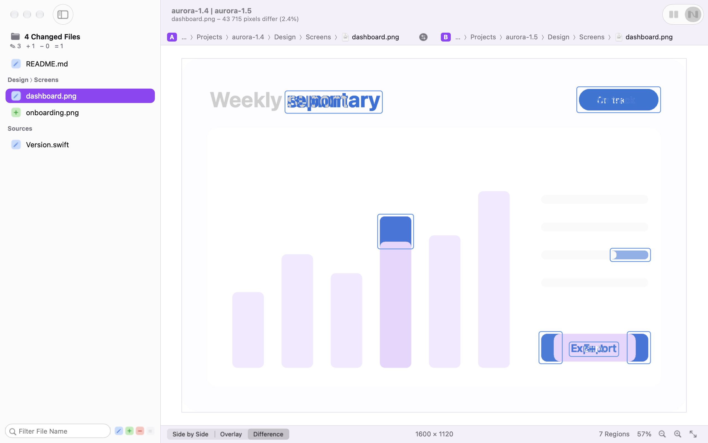

Free & open source · No subscription. Ever.
The prettiest diff
on your Mac.
Free forever.
Twofold is a native macOS app for comparing files and folders. It's gorgeous, it's fast, and it's yours to keep: GPL licensed, no account, no telemetry, no dependencies, and no monthly bill for looking at two text files.
macOS 26 or later · Apple silicon & Intel · Free on GitHub, 4,99 € once on the Mac App Store (coming later)

You bought it once.
That should be the end of it.
Somewhere along the way, diff tools started renting you your own screen. Pay up front, then pay again every month, or watch the app you already paid for get left behind on the next macOS release.
That's absurd. Comparing two files is not a service. Twofold is free, open source and builds from a single command. Nobody can put it behind a paywall, switch off your license, or email you a renewal reminder. Not even us.
Free today, free tomorrow, free after the next macOS update.
Pure Swift and AppKit. Nothing to download, nothing to break.
No sign-in, no telemetry, no license server phoning home.
Zero subscriptions. Zero dependencies. Zero greedy asshats.
Made for looking at changes.
Every pixel is drawn natively with Core Text. No web view, no Electron, no lag.
Fluid layout
Changes on each side are joined by curves through the middle, and both sides glide so the change you're reading stays lined up. No filler lines.
Blocks layout
Prefer the classic look? Matching lines sit on the same row and both panes scroll together. Switch with ⌘1 and ⌘2.
Word-level highlights
See exactly what changed inside a line, down to the characters when only part of a word moved.
Folder comparison
Compare whole directories. Changed, added and removed files stream into a tidy sidebar while the comparison runs in parallel.
Absurdly fast
Diffs 100,000 lines in under 60 ms, scrolls at 120 Hz, and compares 10,000 files per side in about a second.
Light & dark
Two hand-tuned themes that follow your system, or pick one yourself. Switching cross-fades, because why not.



- ✓ Image diff: side by side, overlay and pixel difference
- ✓ Syntax highlighting for 29 languages and formats
- ✓ Unchanged runs fold away; click to expand
- ✓ Soft wrapping and visible line endings
- ✓ Overview strip with every change at a glance
- ✓ Animated next / previous change with ⌘↓ and ⌘↑
- ✓ Reloads automatically when files change on disk
- ✓ Works as
git difftool, including whole trees - ✓ UTF-8, UTF-16 and Latin-1, any line endings
- ✓ Drop two files on the Dock icon and go
The Kaleidoscope alternative
you don't have to rent.
There are plenty of diff tools for the Mac. Only one is native, beautiful, open source and free.
| Twofold | Kaleidoscope | Beyond Compare | FileMerge | Meld | P4Merge | |
|---|---|---|---|---|---|---|
| Price | Free on GitHub 4,99 € once on the App Store |
Subscription | Paid license | Free with Xcode | Free | Free |
| Native macOS app | ● Yes | ● Yes | Cross-platform UI | ● Yes | GTK | Qt |
| Open source | ● GPLv3 | No | No | No | ● GPL | No |
| No account or license key | ● Yes | No | No | ● Yes | ● Yes | ● Yes |
| Folder comparison | ● Yes | ● Yes | ● Yes | ● Yes | ● Yes | No |
| Merge & edit | On the roadmap | ● Yes | ● Yes | ● Yes | ● Yes | ● Yes |
| Actually pretty | ● Very | ● Yes | Functional | Dated | Functional | Dated |
Kaleidoscope, Beyond Compare, FileMerge, Meld and P4Merge are trademarks of their respective owners. Pricing and features as we understand them; check each vendor for current details. "Actually pretty" is our opinion, and we stand by it.
Side by side in detail: Kaleidoscope · Beyond Compare · FileMerge · Meld
Small on purpose.
Twofold isn't trying to be a git client or a do-everything merge suite. It does one thing: shows you what changed between two files or two folders, beautifully and instantly. It's a lightweight viewer you'll actually enjoy opening. Merging and editing are next.
Two ways to get it.
Neither is a subscription.
Same app, same features, nothing locked. You only choose how it gets onto your Mac.
GitHub
- ✓ Download a release, or build it with
make start - ✓ Command line tool and
git difftool - ✓ All source code, GPLv3
Mac App Store
- ✓ One-click install, automatic updates
- ✓ Signed and reviewed by Apple
- ✓ Covers Apple's yearly developer fee, nothing more
- ✓ The easiest way to support the project
Happy with the free version and want to say thanks? Buying it on the App Store, once it's there, keeps Twofold going.
Official builds come only from this project's GitHub releases and, later, the Mac App Store.
If you see Twofold for sale anywhere else, it isn't us.
Roadmap
Version 1: shipped
File and folder comparison, Fluid and Blocks layouts, light and dark themes, git difftool.
Image diff: shipped
Side by side, overlay and pixel difference views.
Syntax highlighting: shipped
Language-aware colours on top of the change colours.
Copy changes & save: next
Copy a change to the other side, undo, and save without touching the rest of the file.
Edit in place
Type, paste and delete in either pane.
Three-way merge
Resolve git conflicts as git mergetool.
Unified layout, ignore whitespace, find
The small things that add up.
Mac App Store
4,99 € once, for one-click install and automatic updates. The GitHub version stays free, and there will never be a subscription.
Get it.
Download a release, or build it yourself. All you need is macOS 26 and the Xcode Command Line Tools.
git clone https://github.com/veturi/twofold.git
cd twofold
make starttwofold commandmake install
twofold old.swift new.swiftgit config --global diff.tool twofold
git config --global difftool.twofold.cmd 'twofold --wait "$LOCAL" "$REMOTE"'
git config --global difftool.prompt falseQuestions
Is Twofold really free?
Yes. Twofold is free and open source under the GPLv3, with no subscription, account or license key. A Mac App Store version is planned at 4,99 € as a one-time purchase, for people who want automatic updates or to support the project. It's the same app.
Which Macs does Twofold run on?
macOS 26 or later, natively on both Apple silicon and Intel.
Can Twofold compare folders?
Yes. Open two folders and Twofold lists every changed, added and removed file in a sidebar grouped by directory, streaming results while the comparison runs in parallel. Select a file to see its diff.
Does Twofold have syntax highlighting?
Yes. Code is coloured by language on top of the change colours, for 29 languages and formats including Swift, C and C++, JavaScript and TypeScript, Python, Go, Rust, HTML, CSS, JSON, YAML and Markdown. The language is picked from the file name, and you can switch the colours off with Option-Command-Y.
Can Twofold compare images?
Yes. Open two images, or select one in a folder comparison, and Twofold shows them side by side, as an overlay you can fade from one version to the other, or as a difference view that highlights every changed pixel and outlines each changed region. It reads PNG, JPEG, HEIC, TIFF, GIF, WebP and the other formats macOS can decode.
How do I use Twofold as my git difftool?
Install the twofold command with make install, then run the three git config lines in Get it. Use git difftool --dir-diff to compare whole trees in one window.
Can Twofold merge or edit files?
Not yet. Twofold is a viewer today. Copying a change from one side to the other and saving is next on the roadmap, then editing in place, then three-way merge for git mergetool.
Is Twofold a good Kaleidoscope alternative?
If you mainly read diffs of text files, images and folders, yes: Twofold is native, polished and free, while Kaleidoscope is sold as a subscription. Kaleidoscope still does more, including merging and three-way merge. The full comparison.
Does Twofold collect any data?
No. The app has no telemetry, no account and no license server. It never sends your files anywhere.
Why does macOS warn me when I first open Twofold?
GitHub release builds aren't notarized by Apple yet. Open the app once, then go to System Settings → Privacy & Security and click Open Anyway. You only need to do this once.